Field DeRotator Interface User's Guide
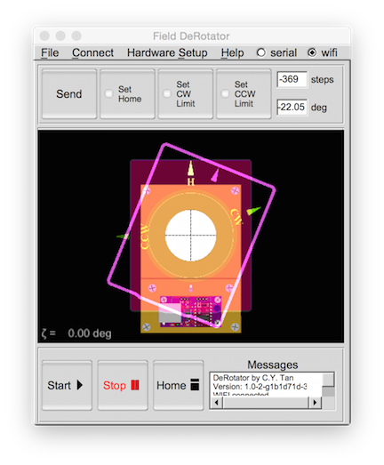
by
C.Y. Tan
June 2015
Copyright
Copyright (C) 2015 C.Y. Tan
Permission is granted to copy, distribute and/or modify this document
under the terms of the GNU Free Documentation License, Version 1.3
or any later version published by the Free Software Foundation;
with no Invariant Sections, no Front-Cover Texts, and no Back-Cover Texts.
A copy of the license is included in the section entitled "GNU
Free Documentation License".
Table of Contents
Introduction
This is the guide for operating the user interface of the Field DeRotator. The
interface allows you to connect to the controller via
and and then communicate with it.
Nomenclature
Interface

Controller

DeRotator

Connecting to the controller
The first time you use the controller with the interface,
you must connect your computer to the controller with a serial line
first to set up the WIFI SSID, Password and Security mode of the
controller.
Serial line
A USB cable is needed to connect the computer to the controller. You
start up the serial connection by either
-
using the menu item Connect →
Serial port ...
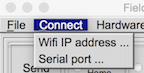
-
using the toggle button serial on
the menubar
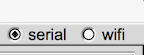
A popup menu appears where you must fill in the device the USB
cable is connected to. By default, the USB serial device is
/dev/cu.usbmodem1a1231
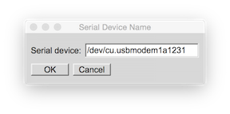
The default communication rate is
115200,8,N,1
Once you have selected the USB serial device, a connection attempt
is made to the controller. The controller always reboots when the serial
line successfully connects.
You must select do a
Hardware Setup → Query Hardware
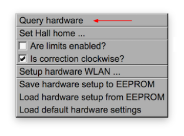
after the the controller has completed its reboot.
This action is unnecessary when connecting with Wifi because this is
done automatically.
First time connecting to the controller
If you want to be able to connect the controller to the LAN, you must
set up the WIFI SSID, Password and Security mode. You set this up
via
Hardware Setup → Setup hardware WLAN ...
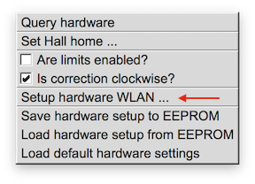
Once this is set up, you can save the WLAN data into the derototor
EEPROM so that it remembers these values after a cold restart. To save
these values into EEPROM, you do the following
Hardware Setup → Save hardware setup to EEPROM
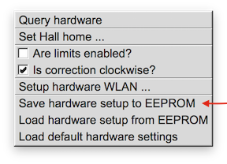
WIFI
You must have a WIFI router that has already been set up that allows
the controller to connect to it using the SSID, Password and
Security mode that had been programmed into it earlier using the
Serial line.
Connecting the controller to the WLAN
The controller is connected by selecting the option
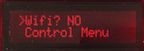
in the controller menu.
The controller will attempt to connect to the WLAN. This can take
several minutes! Please be patient. Once the controller has
successfully connected to the WLAN, it shows
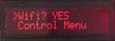
Connecting the computer to the controller
You have to know the IP address assigned to the controller by the
router. This is found by selecting the option
Get Wifi IP ...
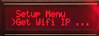
in the controller menu. After selecting this option, the IP address is
displayed. For example,
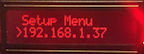
Next, you connect the computer to the controller by either
-
using the menu item Connect → Wifi
IP address ...
-
using the toggle button wifi on the
menubar
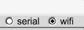
A popup menu appears where you must fill in the IP address that was
shown on the controller.
By default, the controller IP address is
192.168.1.37
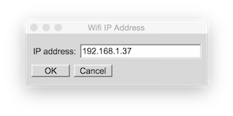
Setting up HOME
The first time the derotator is used, you must et up the HOME position.
The sequence for doing this is described in
Controller.
Once the you have saved the HOME position into the EEPROM,
either setup the controller for Serial or
Wifi communication that was discussed above.
When you start up the interface, it should look like this
Rotating to an arbitrary angle
You can rotate the camera to any abitrary angle as long as the angle
limits are not set. (If you want to limit the maximum angles the
camera can rotate to, you do this with these instructions). You do
this by dragging the magenta rectangle to the angle that you want.
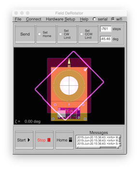
The
steps and deg boxes will show the angle of the magenta
rectangle.
The new HOME position will be sent to the derotator when you hit the
Send button
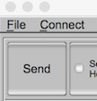
The red image which represents the camera will rotate to the magneta rectangle.
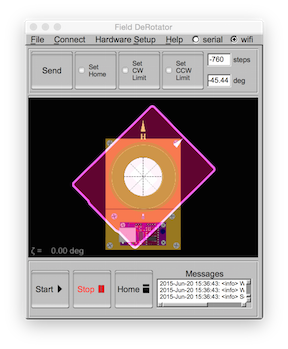
Setting up the HOME position
You can set up a new HOME position by enabling
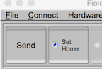
and then dragging the yellow circle to any position
 This new HOME position is sent to the derotator after the
Send button
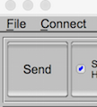
is pushed.
This new HOME position is sent to the derotator after the
Send button
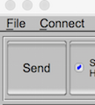
is pushed.
You get out of this mode by disabling
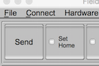
Once, you are out of this mode
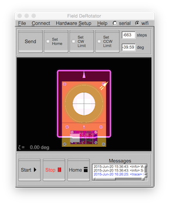
you can hit the
Home button
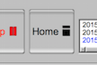
and the camera will rotate to this new HOME.
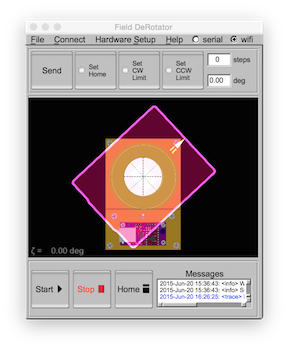
Setting the CW and CCW limits
You can set up the clockwise (CW) and counter clockwise (CCW) limits
that the camera can rotate to by enabling the limits
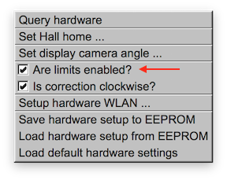
and the interface shows the current CCW and CW limits
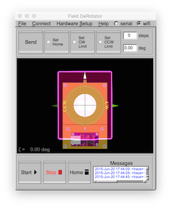
Setting the CW limit
You set the CW limit by enabling
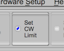
and then dragging the green circle to any position
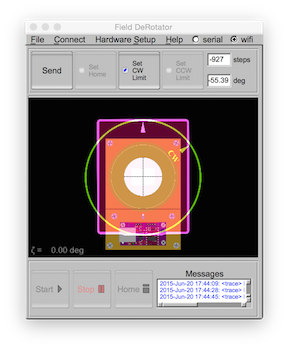
The new CW limit will be sent to the derotator when you hit the
Send button
You get out of this mode by disabling
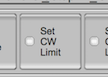
Setting the CCW limit
You can set the CCW limit by enabling the
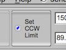
and then dragging the green circle to any position
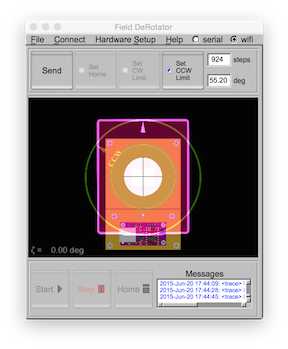
The new CCW limit will be sent to the derotator when you hit the
Send button
You get out of this mode by disabling
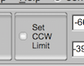
Derotation
You must hook up the controller to the derotator and telescope
according to the instructions in Controller.
If you have hooked up everything correctly,
nothing else is required for derotation.
Starting the derotation
The derotation starts when you hit the
Start button
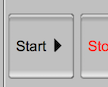
You can see that the camera is indeed being rotated by noting that the
representation of the camera in red, and the magenta rectangle are
both moving away from the HOME position like this
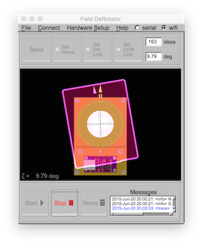
Stopping the derotation
You can stop the derotation at any time (or any other rotations of the
camera) by hitting the
Stop button
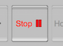
Loading and saving configurations
You can load and save the user configurations using the pull down menu
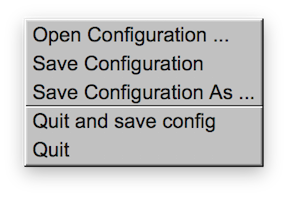
The user configurations are loaded and saved with this menu. Currently
the configuration file contains the following set up parameters:
IPAddress:192.168.1.37
SerialDevice:/dev/cu.usbmodem1a1231
is_correction_clockwise:0
On startup, the interface reads a global configuration file in
$(HOME)/Library/Preferences/cytech/derot.prefs
on the Mac.
When you quit the interface, you can either exit and save the
current configuration to the global configuration file or simply quit
the interface.
Other settings
Here are the other settings that may be useful.
Set Hall home ...
You can manually set the Hall home angle using
using the menu item Hardware Setup →
Set Hall home ...
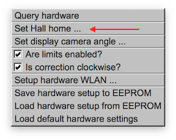
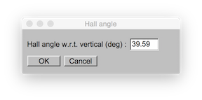
Is correction clockwise?
You have to set the direction of the derotation so that the
correction is in the desired direction.
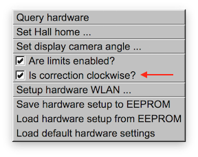
Messages
The info, trace and error messages are displayed in this window.
 These messages are stored in
./logs/derot_$(DATE)_($TIME).log
The trace messages are useful to figuring out start and stop angles
when derotation is executed etc.
These messages are stored in
./logs/derot_$(DATE)_($TIME).log
The trace messages are useful to figuring out start and stop angles
when derotation is executed etc.
Commandline interface
There is a commandline interface that you can use for controlling the
derotator for taking flats. You start the commandline interface by
having options on the commandline. For example,
derot -h
which shows the commandline options are:
-h [ --help ] this message
-i [ --ip ] arg ip address of derotator
-S [ --Serial ] arg serial device to derotator
-s [ --srange ] arg start and stop in steps (separated by a space)
-d [ --drange ] arg start and stop in degrees (separated by a space)
-D [ --gotoD ] arg goto degrees w.r.t. home
-G [ --gotoS ] arg goto steps w.r.t. home
-t [ --time ] arg time to complete from start to stop in seconds
-v [ --version ] print version
If there are no commandline options, the usual graphical interface pops up.
Taking flats
There are shell scripts that is in the scripts directory that can be
used to take flats. These scripts were written for MacOSX (or Linux)
and require socat and Nebulosity to work. You can get the instructions
for taking flats here.
GNU Free Documentation License
This document is copyrighted under the GNU Free Documentation License